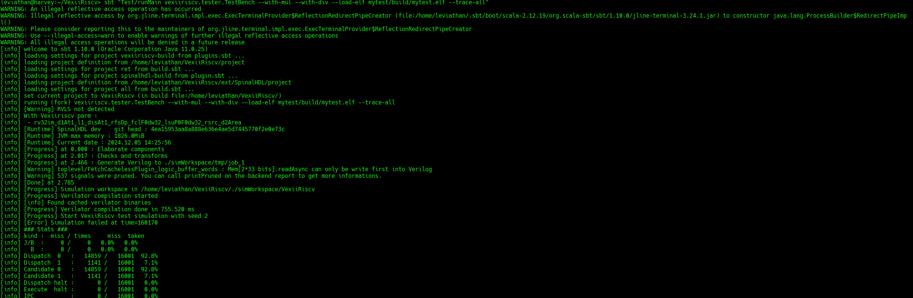
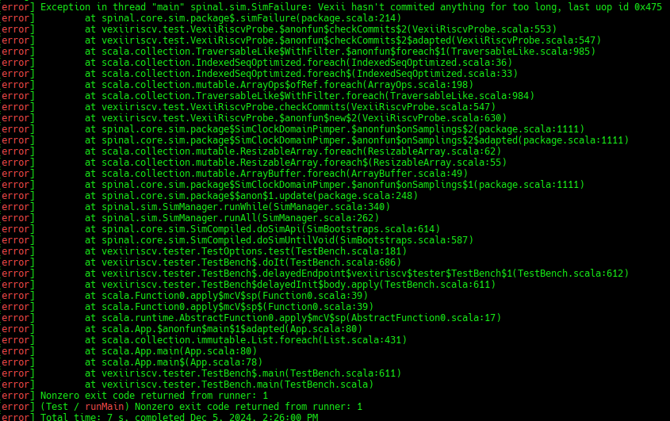
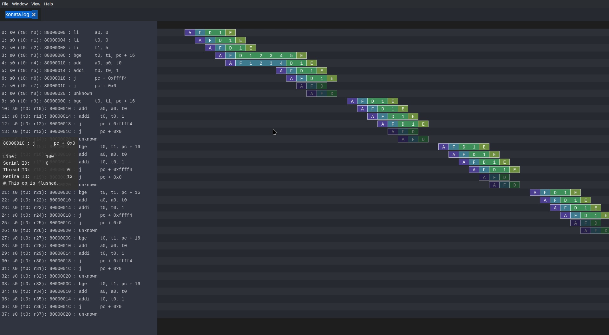
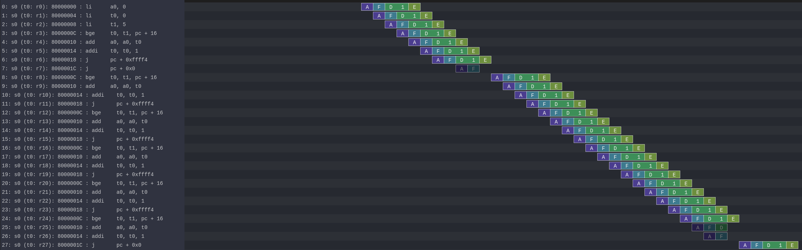
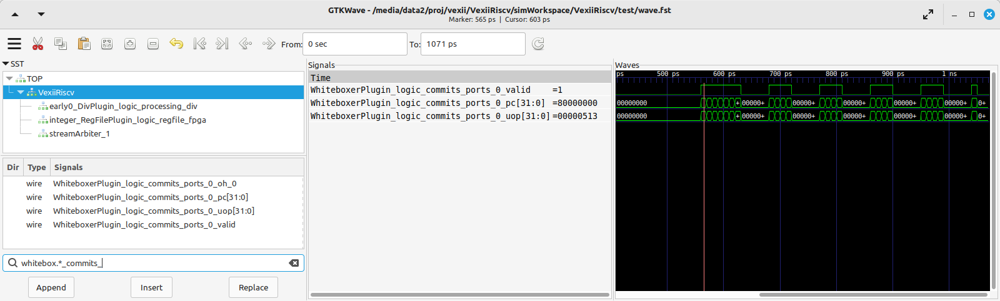
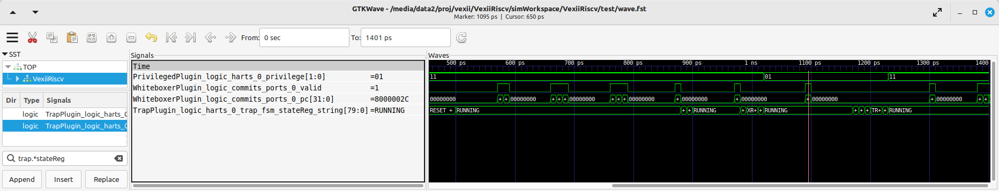

Self Contained Tutorial
In this tutorial you will:
Write some assembly
Assemble (compile) it
Add a bug
Run your code in a simulator
Debug the bug
Learn how to show important signals from the wave
Fix the bug
Tooling
You have two options for getting start:
You can use the Docker image with all the dependencies preinstalled
You can use the How To Use guide on how to install all the stuff you need locally on your machine
Assembler
Looking at examples
In case you haven't done so, you should bring your repo up to speed and init+update all the submodules
cd VexiiRiscv
git pull
git submodule update --init --recursive
After that you can find many test programes in ext/NaxSoftware/baremetal, mostly written in assembly. For instance :
simdAdd : is used to test a custom instruction which implements 4 bytes adder in a single instruction
pmp : is used to test the RISC-V PMP, which allows the machine mode to restrict memory accesses of the supervisor/user mode to specific ranges (Physical Memory Protection)
machine_vexii : is used to test most of the RISC-V machine mode privilegied spec, as for instance, unaligned memory load exception, ...
Writting tests in assembly is often the only viable way to test low level features for a few reasons :
It avoid all the noise which would come from C/C++ languages.
It allow to restrict the features of the CPU being used in the tests, which is very usefull for bring up.
It allows to create very precise sequances of instruction, allowing you to trigger specific corner cases
Write the assembler code
So first of all, create a folder in your repository root ("/work" inside the Docker environment, or otherwisde simply VexiiRiscv. The folder you cloned the repository into) called "mytest"... basically
cd VexiiRiscv
mkdir -p mytest/src
cd mytest
or in Docker
cd /work
mkdir -p mytest/src
cd mytest
then create an assembler file inside the src folder called "crt.S" containing the following code
.option arch, +zicsr
.global _start
_start:
li x1, 42 // Write the literal value 42 in the integer register x1
Build the assembler Code
Now, it's time to create a GNU make file, using the NaxSoftware infrastructure, so that we can turn our assembly code.
In the mytest folder, create a Makefile file containing the following
PROJ_NAME=mytest
STANDALONE=../ext/NaxSoftware/baremetal
include ../ext/NaxSoftware/baremetal/common/asm.mk
After running make in your bash shell respectively Cygwin shell (assuming you have installed everything), you should now be able to find a folder named "build", containing a bin file, and asm file and most importantly the ELF and map file.
leviathan@harvey:~/VexiiRiscv/mytest> ls build/
mytest.asm mytest.bin mytest.elf mytest.map
In short, here is what those files are for :
mytest.elf : This is the primary output of the compiler, it contains all the informations about our compiled program (instruction, data, symbole locations, ..). If you need to backup a compiled program, backup this file, as all 3 others (bin/asm/map) files are generated from this elf.
mytest.bin : Raw binary file of your program. In our case, if this binary file was directly loaded in the memory at the reset vector of the CPU (0x80000000), we would be good to go.
mytest.asm : A text file which tells you the every instructions contained in your compiled program, as well as their location in the memory space, which is quite usefull when you debug the CPU itself.
mytest.map : Specify the memory location of every section/symbol/variable of your program. Not so usefull in general, but can allow to track the access to specific memory variables from a waveform.
Initial run (Error)
In order to run the assembly code we just made, we have to tell sbt to load our ELF file into the VexiiRiscv simulator by running the following command in the root source folder (/work respectively VexiiRiscv)
cd ..
sbt "Test/runMain vexiiriscv.tester.TestBench --with-rvm --allow-bypass-from=0 --load-elf mytest/build/mytest.elf --trace-all"
Here are what the options are for :
--with-rvm : Will turn on the RISC-V RVM extentions, allowing the exection of mul/div instruction.
--allow-bypass-from=0 : Will enable the execute pipeline to forward results from the ALU back to new instruction before they commited, so you can execute ALU instruction back to back, even when they depend on each others.
--load-elf : This will ask the testbench to load the simulated memory with the content of the elf file before the CPU stats. Additionaly, if the testbench detect that the CPU reached the pass/fail symbols of the elf file, it will end the simulation with a success/failure event.
--trace-all : This will ask the simulation to capture a whole set of simulation traces that you can find in simWorkspace/VexiiRiscv/test, including the simulation waveform (wave.fst), a representation of the CPU pipeline status (konata.log).
Keep in mind, by default, VexiiRiscv is configured with most of its features disabled. no branch prediction, no cache, no mmu, no ...
Now it's running
But... ooopsie. It failed.
Question: Why??
Answer The CPU is locked into a illegal instruction exception loop of doom.
Here is the full scénario :
Once the CPU had executed li x1, 42, it then reach a portion of memory which isn't loaded with code but instead has a random value (the testbench is designed that way).
So it is very likely that the CPU try to execute a portion of memory which isn't reconized as an instruction, which produce a illegal instruction exception.
This results into the CPU jumping to its trap vector (mtvec).
This trap vector being initialized by the CPU reset to 0, will make the CPU jump/trap to PC=0
At PC=0 there is aswell some random values, which likely will produce another illegal instruction exception, again and again, forever.
Then, the testbench detect that the CPU isn't doing any commit anymore (forward progress) and call it a failure.
Fixing the Error
We can fix this error quickly by adding those two additional lines to our assembler file
pass:
j pass
Which results in the following code
.option arch, +zicsr
.global _start
_start:
li x1, 42 // Write the value 42 in the register x1
pass:
j pass
After that we run the make/sbt command again.
Now the simulation won't fail anymore, and exit gracfully, as the testbench will detect that the CPU reached the pass symbol.
However, an endless loop which doesn't anything isn't very useful.
Note, running SBT every time with sbt "Test/runMain vexiiriscv.tester.TestBench ... is slow and painefull. What you can do instead is just to run the sbt command without arguments, which will bring you in the SBT shell, and there you can run your Test/runMain vexiiriscv.tester.TestBench ... with much less overhead.
The assembler "hello world"
Since we can't really print out a "hello world" in this context because we're simulating a CPU and the execution of assembler code on it, we go for the next best thing: A for loop
uint32_t sum = 0;
for(int i = 0; i<5; i++) {
sum = sum + i;
}
As RISC-V assembly this looks like that:
.option arch, +zicsr
.global _start
_start:
li a0, 0 # Initialize sum
li t0, 0 # counter start value
li t1, 5 # counter end value
sum_loop:
bge t0, t1, pass # i == 5
add a0, a0, t0
addi t0, t0, 1
j sum_loop
pass:
j pass
Also, note that if you are interrested into more C to assembly comparison, you can use the Compiler Explorer tool. Here is an example :
Note, you can see that this assembly example use register names as a0, t1, while the previous example was using x1. RISC-V has two why of naming the registers :
Via their raw name : x0, x1, x2, ..., x31
Via their ABI Mnemonic : zero, ra, sp, gp, tp, t0-t6, s0-s11, a0-a7
All of this is defined the RISC-V ABI register conventions (https://github.com/riscv-non-isa/riscv-elf-psabi-doc/blob/master/riscv-cc.adoc#register-convention), and GCC suports both. So, in general, if you write lowlevel assembly tests, you can go for the raw name, else just go with the ABI Mnemonic names.
Looking at the pipeline
Opening the pipeline trace (located in simWorkspace/VexiiRiscv/test/konata.log) using Konata , we can see that it goes five times through the loop.
Here are a few explenation now to read those Konata traces :
Horizontally, you have the time axes
Vertically, you have every instruction that reached the CPU decode stage (and futher).
If on the left margin, you see some "???", it mean that you need to compile the ext/riscv-isa-sim and ext/rvls. See ext/rvls/README.md
The reset vector of VexiiRiscv being by default 0x80000000, you can see on the top left it is where it starts.
the A/F/D/I/E symboles represent when a given instruction is in which part of the FPU
A : Address generation of the instruction PC
F : Fetch, when the CPU is reading the instruction from the memory (or its cache)
D : Decode/dispatch, when the CPU is figuring out what the instruction is about, wait until the time is right to schedule the instruction to the execute pipeline, and read the register file
E : Execute, when the instruction is being processed.
Instruction in vivide colors are the one which sucessfuly executed (commited instruction)
Instruction in dark colors are the one which failed to execute (ex : flushed by an un-predicted/miss-predicted branch/jump)
There you go. Our i < 5 condition was successfully executed
Enabling branch prediction
By default, the VexiiRiscv branch prediction feature is disabled. You can turn on a partial version of it on by adding --with-btb argument to your simulation command.
This will enable the Branch Target Buffer (BTB), which allow VexiiRiscv to predict a few things very early in the fetch pipeline, things as :
For a given PC, is the instruction a jump/branch ?
If it is, what would be its target PC ?
If it is a branch, is it likely to be taken ?
You can observe the effects of the branch prediction easily via the Konata trace :
Looking at the waveform
Opening the simulation waveform (located in simWorkspace/VexiiRiscv/test/wave.fst) using gtkwave you can visualize every signals of the simulated CPU across the whole simulation.
So here the difficulty is to know what to look at in this ocean of wires. Here is a few tips about that.
The WhiteboxerPlugin collects many key events from the CPU for debug purposes, in particular its whiteboxerPlugin_logic_commits signals will tell you when the CPU commits an instruction.
DispatchPlugin_logic_candidates signals will tell you every instruction currently waiting to be dispatched to the execution pipeline, aswell as their context.
There is a few pipeline signals as : fetch_logic_ctrl, decode_ctrl execute_ctrl. Note that to know if there is a actual transaction in a given pipeline varies between the pipelines. For the fetch, you can probe fetch.*ctrl.*_valid, for decode it is decode.*LANE_SEL_.$, for execute it is execute.*LANE_SEL_lane.$.
Introducing a bug
Let's say you want to change the way the integer ALU is implemented, the easiest way to do so would be to modify the IntAluPlugin.scala (https://github.com/SpinalHDL/VexiiRiscv/blob/977633e2866b0ab0ffbfc402b459803e2b6f8a0a/src/main/scala/vexiiriscv/execute/IntAluPlugin.scala#L72)
Lets corrupt the XOR instruction to behave like a bitwise OR :
AluBitwiseCtrlEnum.XOR -> (srcp.SRC1 ^ srcp.SRC2),
//into
AluBitwiseCtrlEnum.XOR -> (srcp.SRC1 | srcp.SRC2),
Then lets run this assembly code in the simulation :
.option arch, +zicsr
.global _start
_start:
li x1, 0x0101 // First operand
li x2, 0x1100 // Second operand
li x3, 0x0110 // Expected result for a xor
xor x4, x1, x2
bne x4, x3, fail
pass:
j pass
fail:
j fail
Then you compile the test and run it in the simulator, then, if you have ext/riscv-isa-sim and ext/rvls compliled, you should get the following testbench failure (as it should) :
[Progress] Start VexiiRiscv test simulation with seed 2
[Error] Simulation failed at time=600
### Stats ###
kind : miss / times miss taken
J/B : 0 / 0 0.0% 0.0%
B : 0 / 0 0.0% 0.0%
Dispatch 0 : 36 / 44 81.8%
Dispatch 1 : 7 / 44 15.9%
Candidate 0 : 36 / 44 81.8%
Candidate 1 : 7 / 44 15.9%
Dispatch halt : 0 / 44 0.0%
Execute halt : 0 / 44 0.0%
IPC : 6 / 44 13.6%
Exception in thread "main" java.lang.Exception: INTEGER WRITE MISSMATCH DUT=1110 REF=110
..
So, the interesting thing here, is that the testbench didn't failed because we reached the fail symbol, but because the testbench checks what is happening on every instruction commited by the CPU and detected some bad behaviour. It does that by running RVLS as a golden reference, in a lockstep manner with the simulated VexiiRiscv. This way, as soon as any hardware bug appear in VexiiRiscv, it is automaticaly catched by the testbench, and report it as an error. In our case, it detected that the register file was written with 0x1110 by VexiiRiscv (Device Under Test), instead of 0x0110 by RVLS (Reference).
In other words, you don't need to check that the xor instruction is executing properly by adding assembly code (bne x4, x3, fail), just executing the instruction is enough :D. This is very very usefull when you run for instance a simulation of VexiiRiscv booting linux. This take a lot of time (~20mn), and if the CPU is doing bad things, without this lock-step checking, it would be very very hard to figure out when things went bad for a few reasons :
CPU bugs may not make the software crash instantly, or at all. Symptoms and causes can be very very far apparts (in time).
Long simulation (ex booting linux) are about 400'000'000 cycles long, you can't save all of it in a wave, as that is way too much data.
Note, if you look into simWorkspace/VexiiRiscv/test/spike.log, you can see the riscv-isa-sim logs, which gives you a better insight about what was expected :
core 0: 0x80000000 (0x000010b7) lui ra, 0x1
core 0: 3 0x80000000 (0x000010b7) x 1 0x00001000
core 0: 0x80000004 (0x01008093) addi ra, ra, 16
core 0: 3 0x80000004 (0x01008093) x 1 0x00001010
core 0: 0x80000008 (0x00001137) lui sp, 0x1
core 0: 3 0x80000008 (0x00001137) x 2 0x00001000
core 0: 0x8000000c (0x10010113) addi sp, sp, 256
core 0: 3 0x8000000c (0x10010113) x 2 0x00001100
core 0: 0x80000010 (0x11000193) li gp, 272
core 0: 3 0x80000010 (0x11000193) x 3 0x00000110
core 0: 0x80000014 (0x0020c233) xor tp, ra, sp
core 0: 3 0x80000014 (0x0020c233) x 4 0x00000110
Experimenting with privilege levels
The RISC-V privileged specification specify 3 levels in which the CPU can be to execute code :
Machine mode : This is privilege level which can access everything. When the CPU get out of reset, it spawn in machine mode. Typicaly the machine mode will be used to run bootloaders, bios and baremetal applications.
Supervisor mode : This is the privilge mode which would be used to run operating systems/kernels which want to take advantage of the RISC-V MMU.
User mode : Operating systems/kernels will typicaly use the user mode to run applications. You can see user mode as a sandbox to avoid applications to harm things around.
So, the RISC-V privileged specification is very hard to read if you don't already have some good knowledge about what to expect. What this example aim at doing is to show you how you can navigate your CPU between privilege modes.
.option arch, +zicsr
.global _start
_start:
#define MSTATUS_MPP_SUPERVISOR 0x00000800
#define MSTATUS_MPP_USER 0x00000000
#define CAUSE_ILLEGAL_INSTRUCTION 2
// Specify where the CPU should jump after executing the mret instruction
la x1, supervisor_entry; csrw mepc, x1
// Specify where the CPU should jump when it got a interruption/exception for the machine mode
la x1, supervisor_exit; csrw mtvec, x1
// Specify that the CPU should go in supervisor mode after executing the mret instruction
li x1, MSTATUS_MPP_SUPERVISOR; csrw mstatus, x1
// Engage the privilege transition.
mret
// The CPU should never reach this point
j fail
supervisor_entry:
//Welcome in supervisor mode :D
li x1, 666
// Lets run a illegal instruction, we aren't allowd to access machine mode CSR from supervisor mode !
csrr x1, mepc
// We should not be able to reach this point, as the previous instruction whould have produce a illegal instruction exception
j fail
supervisor_exit:
// Welcome back in machine mode :D
li x1, 42
// Lets read the CSR which indicate the reason why we back to machine mode, and check it is because of CAUSE_ILLEGAL_INSTRUCTION
csrr x1, mcause
li x2, CAUSE_ILLEGAL_INSTRUCTION; bne x1, x2, fail
// lets read which instruction (PC) caused it
csrr x1, mcause
pass:
j pass
fail:
j fail
Then, compile it, but to run it in the simulation, you will need to add the --with-supervisor, as the VexiiRiscv only support machine mode by default.
Here is a wave with a few key signals to figure out what the CPU is doing :
Note the TrapPlugin_logic_harts_0_trap_fsm_stateReg_string signal, which is a special state machine in VexiiRiscv which is used to handle a few corner case, as interrupts, exceptions, replay of failed instructions, and a few other things.
Also, note that ext/NaxSoftware/baremetal/driver/privileged.h contains a bunch of very usefull macro to do similar things.
Connecting with openocd to the simulation
Openocd is a tool generaly used to connect your PC to a micro-controller and debug/reprogram it through a USB to JTAG dongle.
One interresting thing is that there is ways to simulate that jtag connection between openocd and the VexiiRiscv simulation by using a TCP connection. Here is how you can do it :
First, install openocd (a regular version should be fine)
Then, let a simulation run in one terminal with the following additional arguments --no-probe --no-rvls-check --debug-privileged --debug-jtag-tap --jtag-remote. Do not forget to remove the --trace-all, as it will create very big log files if you let it run long as well as slowing down the simulation.
--no-probe : Will disable the testbench CPU inactivity watchdog (as we can stop the CPU activity totaly using the jtag)
--no-rvls-check : Will disable the RVLS golden model checking, as it isn't supported with the jtag connection yet
--debug-privileged : Will enable the CPU debug interface aswell as all the required special CSR (Control Status Register)
--debug-jtag-tap : Will add in the CPU all the required logic to drive the CPU debug interface from a JTAG interface
--jtag-remote : Will ask the testbench to implement the TCP to simulated JTAG bridge
Then you can start openocd via :
(cd src/main/tcl/openocd/ && openocd -f vexiiriscv_sim.tcl)
This should give you the following message :
rawrr@rawrr-pc:/media/data2/proj/vexii/VexiiRiscv$ (cd src/main/tcl/openocd/ && openocd -f vexiiriscv_sim.tcl)
Open On-Chip Debugger 0.11.0
Licensed under GNU GPL v2
For bug reports, read
http://openocd.org/doc/doxygen/bugs.html
Info : only one transport option; autoselect 'jtag'
Info : set servers polling period to 400ms
Info : Initializing remote_bitbang driver
Info : Connecting to localhost:44853
Info : remote_bitbang driver initialized
Info : This adapter doesn't support configurable speed
Info : JTAG tap: riscv.cpu tap/device found: 0x10002fff (mfg: 0x7ff (<invalid>), part: 0x0002, ver: 0x1)
Info : datacount=1 progbufsize=2
Info : Disabling abstract command reads from CSRs.
Info : Examined RISC-V core; found 1 harts
Info : hart 0: XLEN=32, misa=0x40000100
Info : starting gdb server for riscv.cpu.0 on 3333
Info : Listening on port 3333 for gdb connections
Ready for Remote Connections
Info : Listening on port 6666 for tcl connections
Info : Listening on port 4444 for telnet connections
Meaning that the connection is successful !
You can then connect to openocd in a few ways :
Using GDB, which would allow you to have a fully fledge debugger
Using telnet, to ask openocd to execute basic commands.
The issue with GDB, for very low level debugging, is that it often has a lot of overhead/noise, even for simple tasks. So in general using telnet is a better first step.
Here is an example of telnet connection to openocd :
telnet localhost 4444
Trying 127.0.0.1...
Connected to localhost.
Escape character is '^]'.
Open On-Chip Debugger
>
Then you can run various commands as :
# Read a 32 bits word at the address 0x80000000
mdw 0x80000000
# Write a 32 bits word (0x04200513, which is a "li a0, 0x42" instruction) at the address 0x80000000
mww 0x80000000 0x04200513
# Move the CPU PC to the instruction we just wrote at 0x80000000
reg pc 0x80000000
# Ask the CPU to execute a single instruction
step
# Read the CPU PC, it should be 0x80000004
reg pc
# Read the CPU register a0, it should be 0x42 (just written by the instruction we step)
reg a0
There is plenty other commands available. For instance you could load the opensbi, device tree, linux, buildroot binary files in the memory from the JTAG, and boot linux, all from the JTAG ! (maybe not in simulation, it would take too long to load the images :D)
C code "hello world" (literally)
Here's a simple example how you can use C and sim_putchar for printing out stuff directly through the simulation environment, allowing you to output debug messages from within the firmware you're developing.
Write the C code
So first of all, create a folder in your repository root ("/work" inside the Docker environment, or otherwisde simply VexiiRiscv. The folder you cloned the repository into) called "mytest"... basically
cd VexiiRiscv
mkdir -p helloworld/src
cd helloworld
or in Docker
cd /work
mkdir -p helloworld/src
cd helloworld
Create a file in src, called main.c
The content of src/main.c should look like that:
#include <sim.h>
void main(){
for(int i=0;i<10;i++) {
char *str = "hello world";
while(*str) sim_putchar(*str++);
}
}
Compiling the Code
Now, it's time to create a GNU make file, using the NaxSoftware infrastructure, so that we can turn our c code into an ELF file which we can load in the simulator.
In the same helloworld folder as above create a Makefile file containing the following
PROJ_NAME=helloworld
STANDALONE=../ext/NaxSoftware/baremetal
SRCS = $(wildcard src/*.c) \
$(wildcard src/*.cpp) \
$(wildcard src/*.S) \
${STANDALONE}/common/start.S
include ../ext/NaxSoftware/baremetal/common/app.mk
After running make in your bash shell respectively Cygwin shell (assuming you have installed everything), you should now be able to find a folder named "build", containing a bin file, and asm file and most importantly the ELF and map file.
leviathan@harvey:~/VexiiRiscv/helloworld> make
CC src/main.c
CC ../ext/NaxSoftware/baremetal/common/start.S
LD helloworld
/opt/riscv/lib/gcc/riscv64-unknown-elf/13.2.0/../../../../riscv64-unknown-elf/bin/ld: warning: build/helloworld.elf has a LOAD segment with RWX permissions
Memory region Used Size Region Size %age Used
ram: 4848 B 256 KB 1.85%
leviathan@harvey:~/VexiiRiscv/helloworld> ls
build Makefile src
leviathan@harvey:~/VexiiRiscv/helloworld> ls build/
helloworld.asm helloworld.bin helloworld.elf helloworld.map home
Compilation error
There might be a compilation error going somewhat like that
leviathan@harvey:~/VexiiRiscv/helloworld> make
CC src/fix.S
CC ../ext/NaxSoftware/baremetal/common/start.S
../ext/NaxSoftware/baremetal/common/start.S: Assembler messages:
../ext/NaxSoftware/baremetal/common/start.S:55: Error: unrecognized opcode `csrc mstatus,x1', extension `zicsr' required
../ext/NaxSoftware/baremetal/common/start.S:57: Error: unrecognized opcode `csrs mstatus,x1', extension `zicsr' required
This happens because newer builds of the RISC-V toolchain have this feature disabled by default now and you've got to manually enable it, which can easily be achieved by adding the following on line 1 of ext/NaxSoftware/baremetal/common/start.S
.option arch, +zicsr
...
Running the code
You can now use SBT in order to run the elf file in your simulation
cd ..
sbt "Test/runMain vexiiriscv.tester.TestBench --with-rvm --allow-bypass-from=0 --load-elf helloworld/build/helloworld.elf --trace-all --no-probe --debug-privileged --no-rvls-check"
This should now print 10 times "hello world" on your terminal
leviathan@harvey:~/VexiiRiscv> sbt "Test/runMain vexiiriscv.tester.TestBench --with-rvm --allow-bypass-from=0 --load-elf helloworld/build/helloworld.elf --trace-all --no-probe --debug-privileged --no-rvls-check"
WARNING: An illegal reflective access operation has occurred
WARNING: Illegal reflective access by org.jline.terminal.impl.exec.ExecTerminalProvider$ReflectionRedirectPipeCreator (file:/home/leviathan/.sbt/boot/scala-2.12.19/org.scala-sbt/sbt/1.10.0/jline-terminal-3.24.1.jar) to constructor java.lang.ProcessBuilder$RedirectPipeImpl()
WARNING: Please consider reporting this to the maintainers of org.jline.terminal.impl.exec.ExecTerminalProvider$ReflectionRedirectPipeCreator
WARNING: Use --illegal-access=warn to enable warnings of further illegal reflective access operations
WARNING: All illegal access operations will be denied in a future release
[info] welcome to sbt 1.10.0 (Oracle Corporation Java 11.0.25)
[info] loading settings for project vexiiriscv-build from plugins.sbt ...
[info] loading project definition from /home/leviathan/VexiiRiscv/project
[info] loading settings for project ret from build.sbt ...
[info] loading settings for project spinalhdl-build from plugin.sbt ...
[info] loading project definition from /home/leviathan/VexiiRiscv/ext/SpinalHDL/project
[info] loading settings for project all from build.sbt ...
[info] set current project to VexiiRiscv (in build file:/home/leviathan/VexiiRiscv/)
[info] running (fork) vexiiriscv.tester.TestBench --with-rvm --allow-bypass-from=0 --load-elf helloworld/build/helloworld.elf --trace-all --no-probe --debug-privileged --no-rvls-check
[info] With Vexiiriscv parm :
[info] - rv32im_d1At1_l1_disAt1_rfsDp_fclF0dw32_lsuP0F0dw32_bp0_rsrc_d2Area_pdbg
[info] [Runtime] SpinalHDL dev git head : 4ea15953aa8a888e636e4ae5d7445770f2e0e73c
[info] [Runtime] JVM max memory : 1826.0MiB
[info] [Runtime] Current date : 2024.12.05 20:01:11
[info] [Progress] at 0.000 : Elaborate components
[info] [Progress] at 1.790 : Checks and transforms
[info] [Progress] at 2.290 : Generate Verilog to ./simWorkspace/tmp/job_1
[info] [Warning] toplevel/FetchCachelessPlugin_logic_buffer_words : Mem[2*33 bits].readAsync can only be write first into Verilog
[info] [Warning] 546 signals were pruned. You can call printPruned on the backend report to get more informations.
[info] [Done] at 2.555
[info] [Progress] Simulation workspace in /home/leviathan/VexiiRiscv/./simWorkspace/VexiiRiscv
[info] [Progress] Verilator compilation started
[info] [info] Found cached verilator binaries
[info] [Progress] Verilator compilation done in 632.813 ms
[info] [Progress] Start VexiiRiscv test simulation with seed 2
[info] hello world
[info] hello world
[info] hello world
[info] hello world
[info] hello world
[info] hello world
[info] hello world
[info] hello world
[info] hello world
[info] hello world